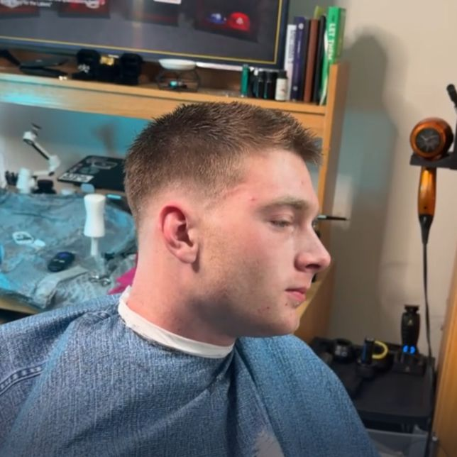
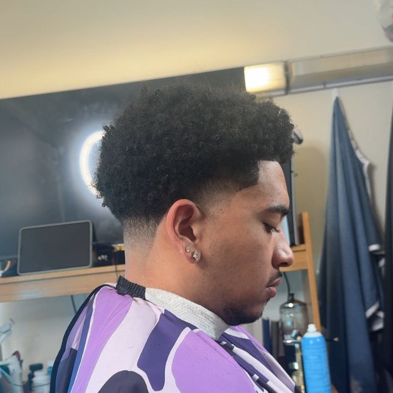
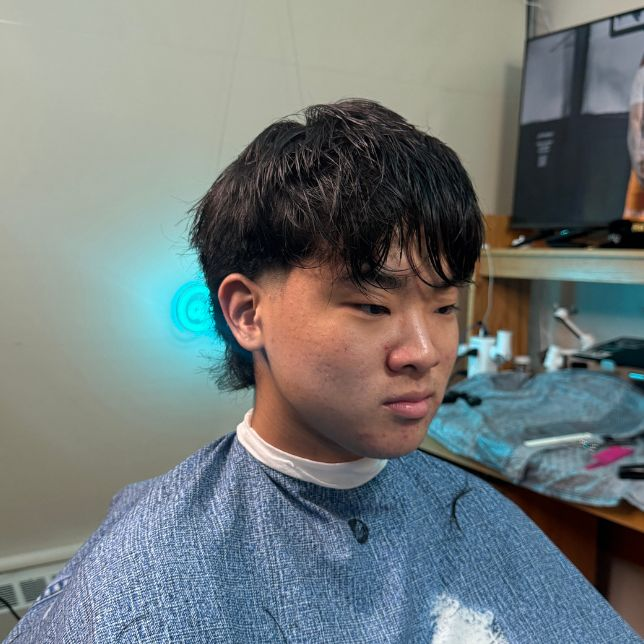

Choose Your Style
A guide to educate clients on their hairstyle options
These hairstyles vary from Scissor only, clipper only, or both
Click Here To Book!How to Choose A Style
- Have a Goal in mind
- Choose your desired length
- Pick a fade style based on the length
Learn About Styles
- Skin-Fade
- Wolfcut
- Taper-Fade
Skin-Fade
For clients with short to medium hair length: A gradient transition from skin all the way to a 18mm length on the parietal ridge. Leaving the client with a choice of keeping or cutting the left over length at the top to a desired length

Taper-Fade
For clients with short, medium, long hair: A gradient transition fron skin to 18mm at the temple, client can decide to cut the length on top shorter to match the sides and back equally

Wolfcut
For clients with long hair: Hair is cut with scissors only to create a flow from shorter to longer length of hair to the nape of the neck. Length is essential to the cut of style so clients must decide this first.

Check out more styles!